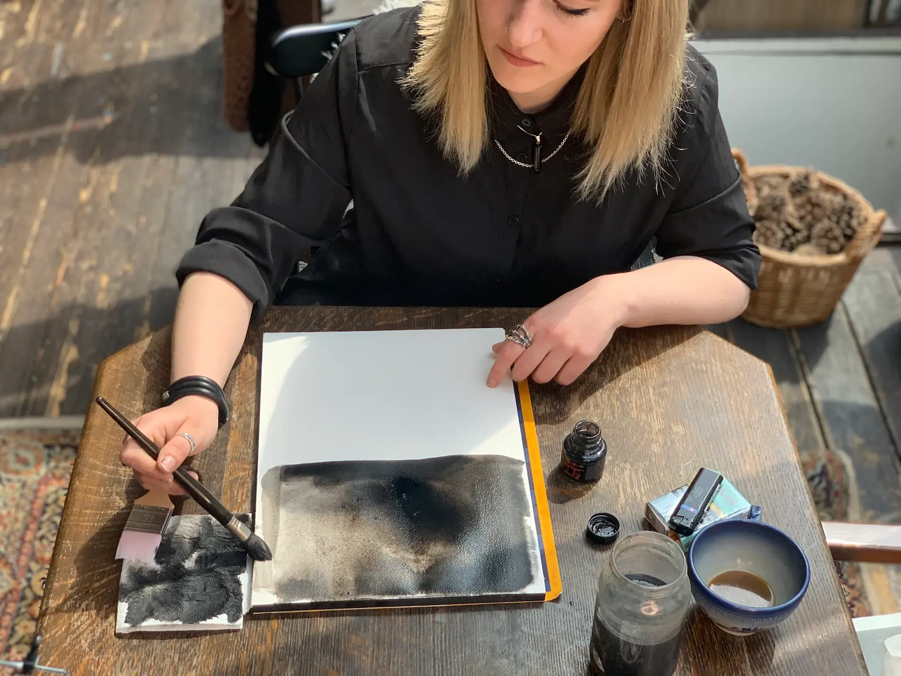
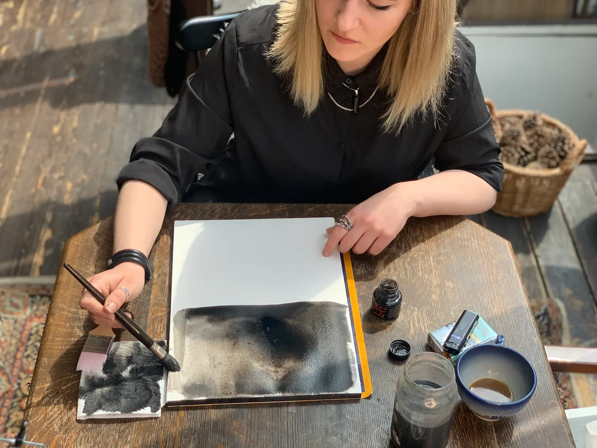
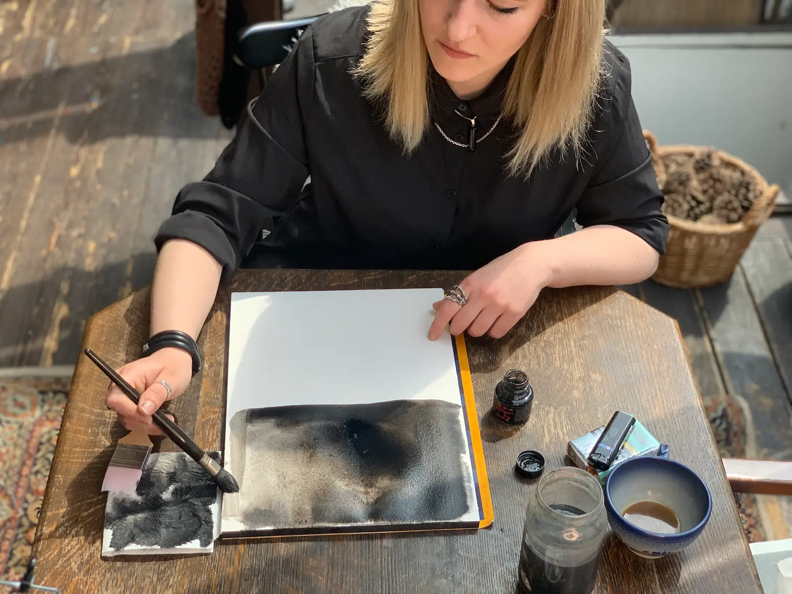
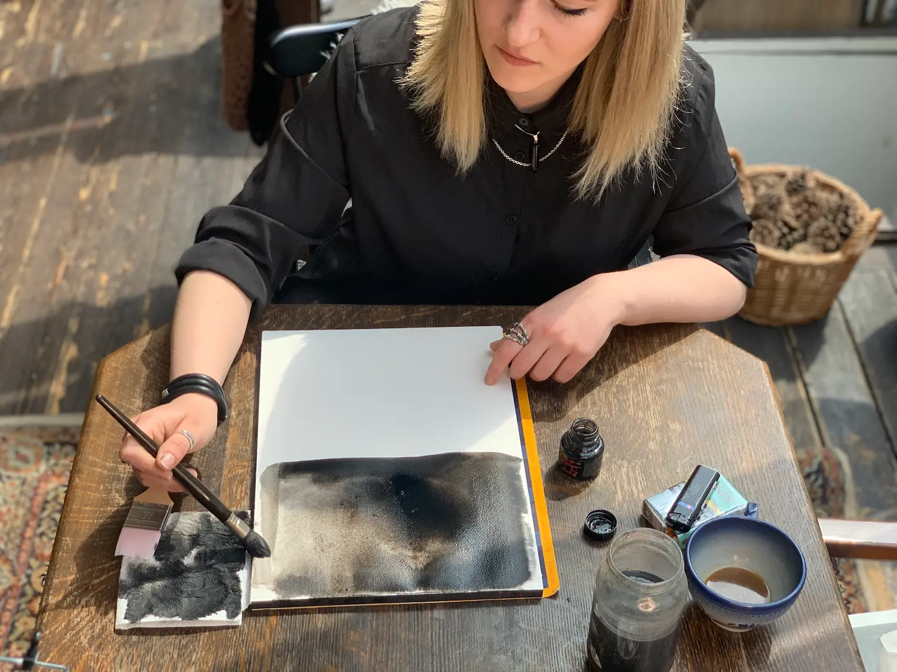

Sarah Kalmar Dyrnits
"Vi alle går igennem perioder hvor vi mærker vores følelser meget, eller slet ikke mærker vores følelser"

"Vi alle går igennem perioder hvor vi mærker vores følelser meget, eller slet ikke mærker vores følelser"
